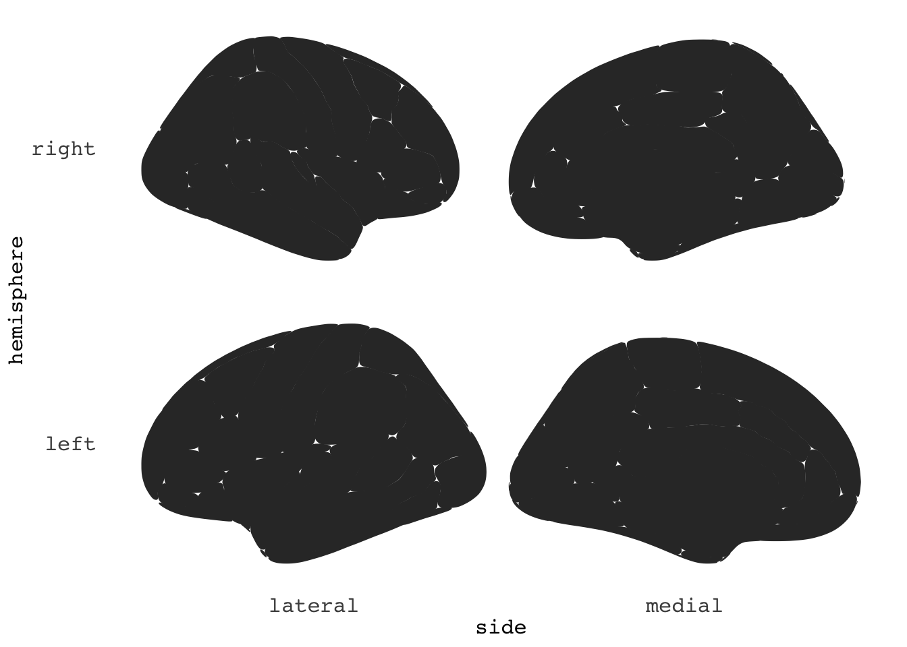
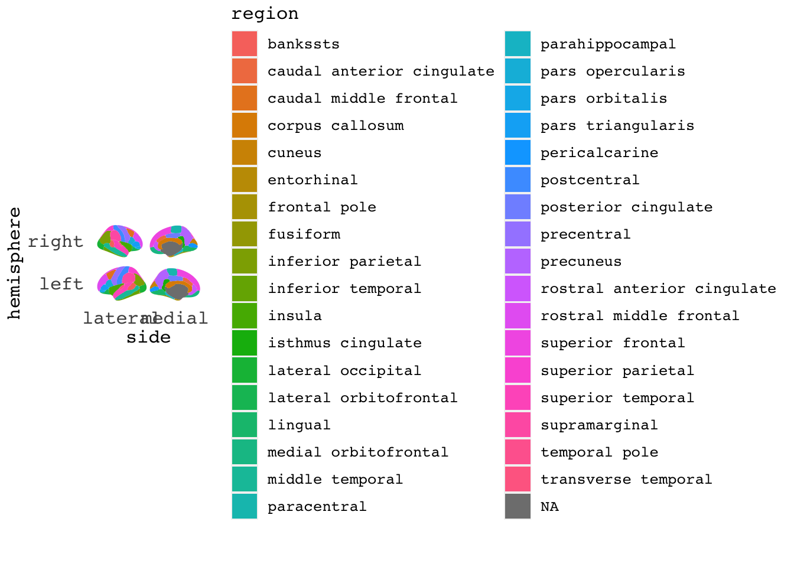
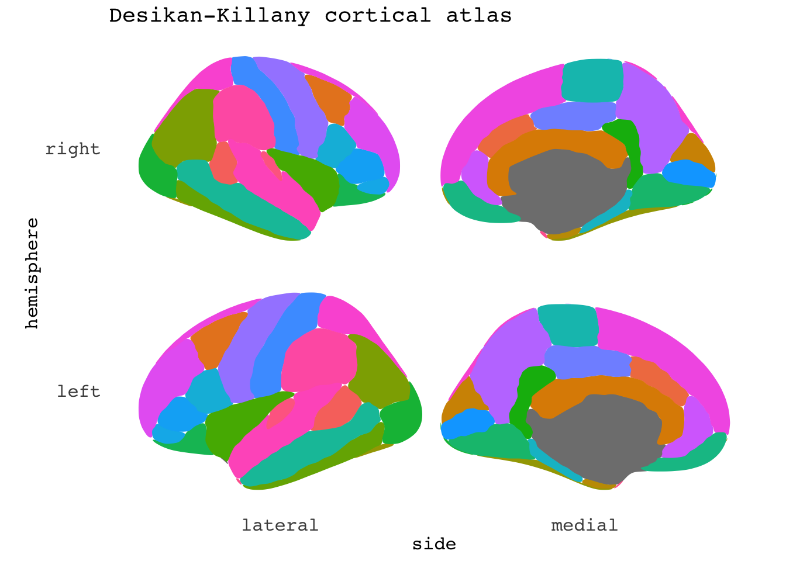
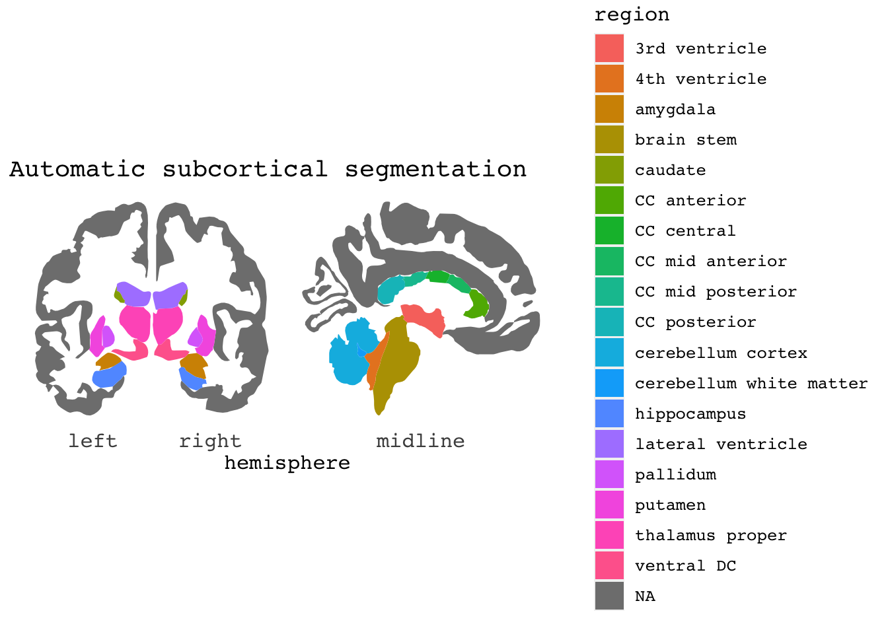
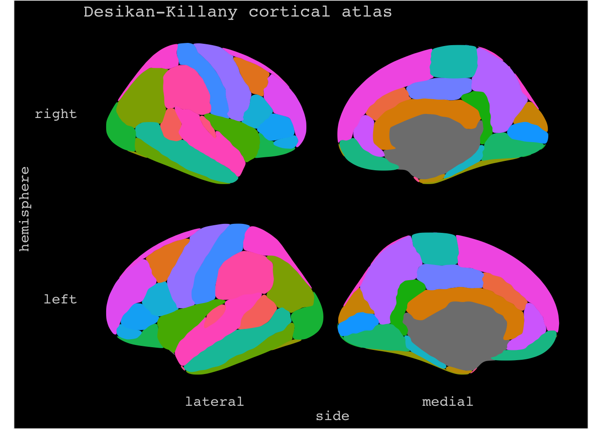
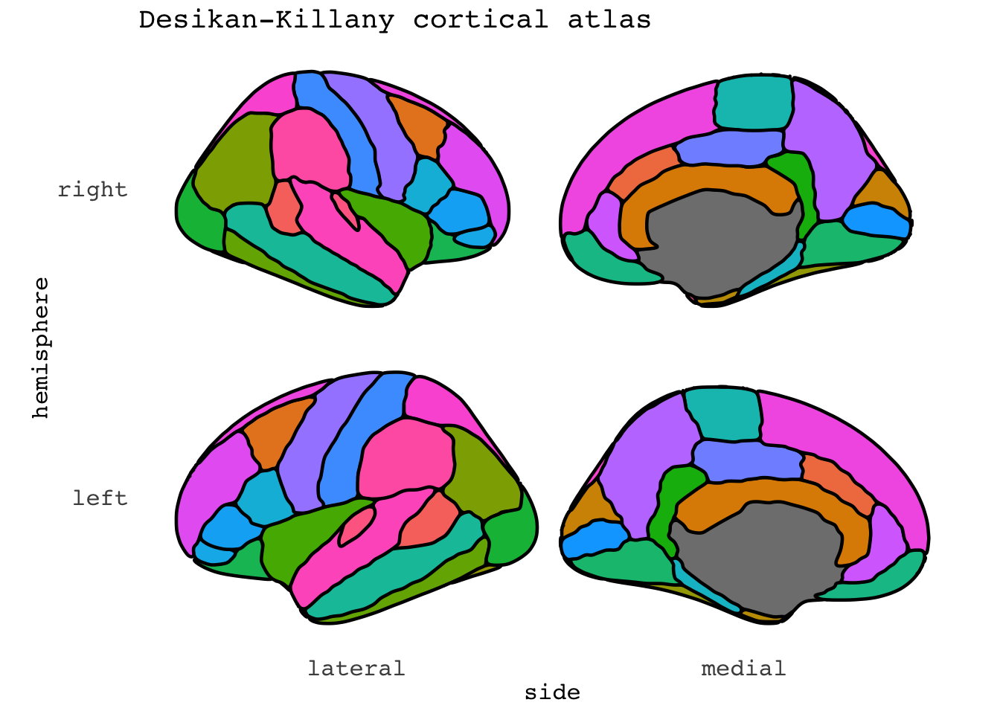
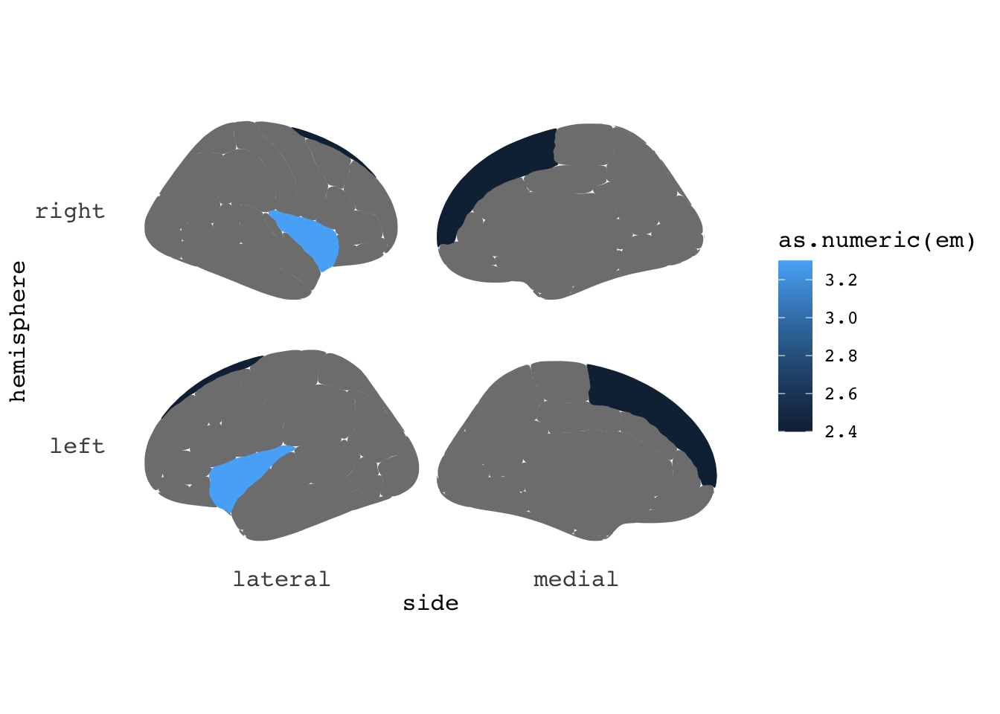

Blog
Introducing the ggseg R-package for brain segmentations
Edit: Though posted only a week ago, we have discovered another R package called ggBrain which has slightly different functions than what our package has. Because of this, we have altered the name of our package to ggseg short for ggsegmentation which is a better description of what our package does.
I’ve not written a post in a while. Mostly because of summer vacation, and also because I have been a little swamped at work. Fortunately, I got back to work with new gusto in August, and have something exciting to show you!
A while a go, my co-worker Didac, approached me with an idea for creating the possibility to plot brain segmentations directly in R. I loved the idea, and went straight at it, though, overly complicated and the initial project I started is a little stalled.
Before the summer, he showed me what he really intended, and it is brilliant! So, we worked a bit together, and have scambled together the first little package we have ever made.
The ggseg package is intended for those who need to easily plot results or overviews of segmentet data.
In neuroimaging, we often run analyses that segment the brain into different regions, according to different types of classification atlases.
We have, to begin with, focused on two atlases from the popular software Freesurfer, the Desikan-Killany cortical atlas (dk), and the subcortical segmentation atlas (aseg).
These two segmentation atlases are automatically run on any structural T1-weighted MRI image run through Freesurfers recon-all command, and such is data many people have.
It can give you, per MRI image, mean values of region and thickness for each region in the atlas, that you can use with your hearts delight for analyses.
But, once analysed, there is not particlarly easy way of plotting the results, and we couldn’t have that!
So, after some laborious manual work in tracing the segments from the atlases into scalable vector graphics (svg), transforming it to GIS data, and then fortifying this in R for ggplot’ing, we finally have some good stuff.
Now, this is the first time we are writing any type of package, or functions like this. I’m sure we can improve the code quite a lot, and we are very happy to receive any pull requests for improvements and to learn more. But for now, the functions work well, and we’d like to introduce it to you.
This package is developed as part of our work in our lab The Center for Lifespan Changes in Brain and Cognition, and is thus released on our lab-github. It is not a CRAN-package, but if we get some more assistance/experience we will considering releaseing it on CRAN at some point.
So, you can install this using devtools, and we recommend building the vignette also.
devtools::install_github("LCBC-UiO/ggseg", build_vignette=T)Once installed, you can have a look through the vignette with vignette(ggseg), but I’ll cover some basics here.
ggseg is made using ggplot2. Who doesn’t love ggplot. It is sleek and beautiful, and we wanted these plots to be compatible with ggplot functions, like facet_wrap and theme.
Out-of-the box, calling ggseg directly will plot the dk atlas.
library(tidyverse)
library(ggseg)
ggseg()
You can also choose to stack the hemispheres ontop of each other, if that works better for you.
ggseg(position="stacked")
Of course, this grey thing isn’t particularly fun to look at, so we can do some colourings.
The atlases all have a variable called region, which will colour different sections in meaningful ways.
You do this with ggplot aes mapping.
ggseg(mapping=aes(fill=region), position="stacked")
But there are so many labels! We can’t fit them all for this atlas. We can turn them off!.
ggseg(mapping=aes(fill=region), position="stacked", show.legend = F) +
ggtitle("Desikan-Killany cortical atlas")
The package currently has three atlases available. The default Desikan-Killany cortical atlas as shown above, and the Automatic subcortical segmentation (aseg), and the Yeo 2011 7 resting-state networks.
ggseg(atlas=aseg,mapping=aes(fill=region)) +
ggtitle("Automatic subcortical segmentation")
# remotes::install_github("LCBC-UiO/ggsegYeo2011")
library(ggsegYeo2011)
ggseg(atlas=yeo7, position="stacked", mapping=aes(fill=region),) +
ggtitle("Yeo 7 resting-state networks")
We are working on adding the Yeo 2011 17 resting-state networks, in addition to a sagittal view of the aseg atlas. We work on that when we need other more “relaxing” tasks than responding to reviewers every whims.
Since this is a ggplot-based function, there are lots of ways you can manipulate how it looks.
For instance by using different themes. The package comes with three themes:
theme_brain, theme_darkbrain, and theme_custombrain, the latter is really just a simple convenience theme for those who don’t want to or know how to customize simple things like the plot background and text colour.
ggseg(mapping=aes(fill=region), position="stacked",show.legend = F) +
ggtitle("Desikan-Killany cortical atlas") +
theme_darkbrain()
There are several extra options you can add, like increasing the size of the contouring line and its colour
ggseg(mapping=aes(fill=region), position="stacked",
colour="black",size=.8,show.legend = F) +
ggtitle("Desikan-Killany cortical atlas")
wowsa, that’s a bit too many labels. But It helps you get oriented. Now, in most cases, we think people will use this to plot some results. Like p-values, or estimated means. To do this, you can provide the function with some data. Importantly, the data must include some variables that will match the data to the atlas data.frame for merging.
Lets for instance say you have found that the thickness of the insula and superior frontal cortex increase with age, and you want to plot the estimated means highlighting those two regions only.
results = data.frame(cbind(region=c("superior frontal","insula"),em=c(2.4,3.3)),
stringsAsFactors=F)
results %>%
ggseg(mapping=aes(fill=as.numeric(em)), position="stacked") 
Neat-o. But maybe the results only pertained to the right insula, and left superior frontal? Just add a hemi variable indicating which hemisphere the results belong to.
results = data.frame(cbind(region=c("superior frontal","insula"),
em=c(2.4,3.3),
hemi=c("left","right")),
stringsAsFactors=F)
results %>%
ggseg(mapping=aes(fill=as.numeric(em)), position="stacked") 
If you keep your data in tall/long format, as ggplot likes it, you can also plot results from different groups using facets.
results = data.frame(region=c("superior frontal","insula", "pars orbitalis","precentral"),
em=c(2.4,3.3,1.2,2.6),
hemi=c("left","right","right","right"),
AgeGroup = c(rep("Young",2),rep("Old",2)),
stringsAsFactors=F) %>%
group_by(AgeGroup)
results %>%
ggseg(mapping=aes(fill=as.numeric(em)), position="stacked", colour="black") +
facet_wrap(~AgeGroup,ncol=1)
That’s all for now. Or, there are more options, but that’s what I’ll be going through today. As mentioned, we are very new at making packages, and I’m sure there are many ways to make this package more efficient. Drop us a line or pull request if you feel like contributing!
Edits
Post edited in March 2020 to be compatible with new arguments